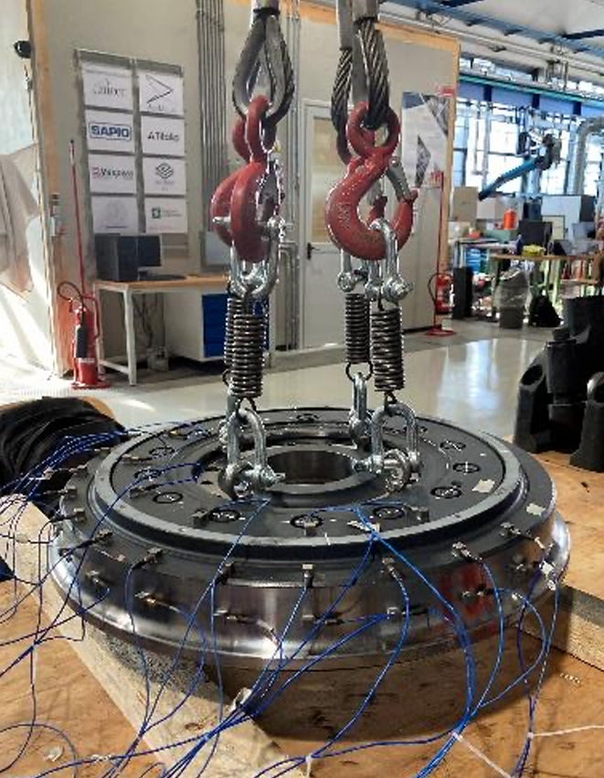
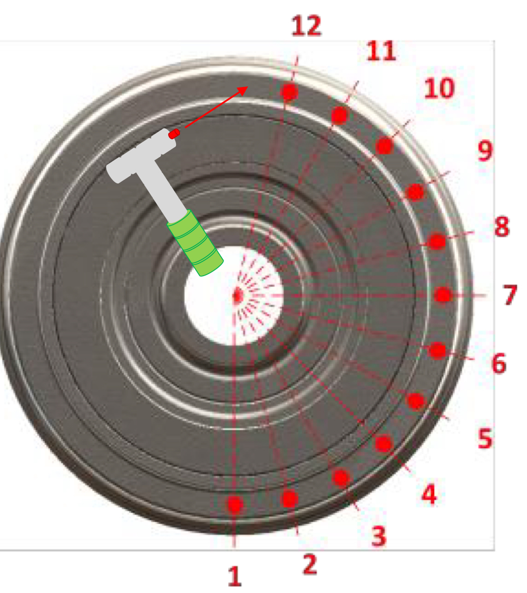

Operational Modal Analysis of a Rail Wheel

Project Overview
This project focused on the modal parameters identification of a rail wheel based on real experimental data. The wheel was suspended using elastic supports and excited using a dynamo-metric impact hammer, with responses captured via twelve accelerometers.

Main Requirements & Tasks
- Data Processing: Process raw vibration data from 12 accelerometers to generate experimental Frequency Response Functions (FRFs) and coherence functions.
- Initial Guess Estimation: Analyze the coherence drops near resonant peaks to intelligently select initial guesses for natural frequencies and identify nodal points.
- Error Minimization: Implement a least-square error minimization algorithm to numerically fit the experimental FRF curves.
- Mode Shape Reconstruction: Extract the natural frequencies and modal damping, and interpolate the mode shapes along the wheel's geometry using a spline function.
What Was Done
I successfully transformed raw impact test data into a complete modal model of the rail wheel. By utilizing an advanced error minimization procedure in MATLAB, I fit numerical FRFs to the experimental data, accurately capturing the resonance peaks while filtering out noise.
Through evaluating the imaginary part of the fitted transfer functions, I successfully reconstructed the continuous mode shapes of the structure, proving the effectiveness of FRF-based multi-mode curve fitting methods for complex mechanical systems.
Mode Shapes Reconstruction
 View on GitHub
View on GitHub